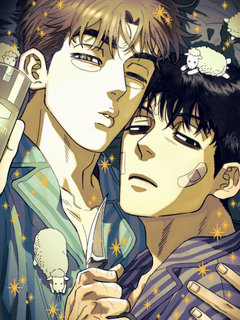
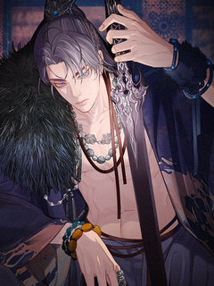
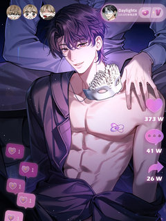
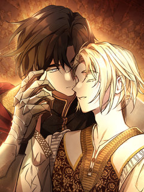
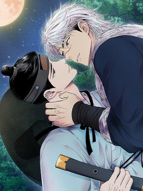
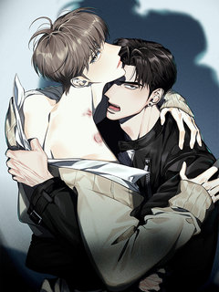
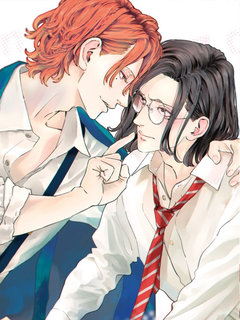
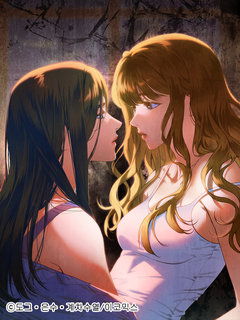
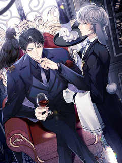

BL·GL 집착·나쁜남자·후회남 웹툰 추천 TOP 24
BL·GL 작품 중에서 집착남, 집착녀, 집착물, 계략남 같은 요소가 들어간 작품만 골랐어요. 네이버웹툰·카카오웹툰·레진코믹스에서 조건에 맞는 작품 24개 중 인기 순으로 24개를 골랐어요. 인기 TOP 3: 킬러가 사랑에 빠졌을 때, 소꿉친구의 가이드가 되었다 [연재], 그 남자가 대신 시집간 사정 [연재]
2026-10-02 기준 · 성인 작품 제외
내 취향으로 더 좁혀서 추천받기 →-
1

레진코믹스킬러가 사랑에 빠졌을 때
[속보] 프로 킬러 주태만이 국내 최고의 배우 강다혁에게 반해버렸다! 극강의 훈련과 교육 그리고 잔인한 고문도 견뎌낸 프로 킬러 주태만, 그러나 어째서인지 강다혁의 다정함에는 손쉽게 무너지는데...? ㅡ 프로킬러 NN년차, 설마 이게 바로 사랑? 그러면 이럴 때는 어떻게 해야 하지?
BL·GL계략남직진수헌신수능력수레진코믹스에서 보기 → -
2
![소꿉친구의 가이드가 되었다 [연재] 표지](../../thumbs/lezhin/7011745902996743.jpg) 레진코믹스
레진코믹스소꿉친구의 가이드가 되었다 [연재]
하룻밤으로 D급 가이드에서 S급 가이드가 되었다. 만년 D급 가이드 조이현. 쌍둥이 소꿉친구들이자 A급 에스퍼인 정한세와 정한결의 그늘에 가려져 살다가 단 하룻밤으로 S급 가이드가 되다?!
BL·GL능글남순진수연하남능력수레진코믹스에서 보기 → -
3

레진코믹스그 남자가 대신 시집간 사정 [연재]
진북왕 군현효는 심지부 딸이 미인이라는 소문을 듣고 첩으로 들이라 명한다. 진북왕의 잔인한 소문을 두려워한 심지부는 벙어리 노비 심옥을 여장시켜 대신 시집을 보낸다. 절세미인인 심옥에게 진북왕이 빠져들어 집착하자, 이를 질투한 왕비는 다양한 계략으로 심옥을 이간질하며 괴롭힌다. 자신을…
BL·GL후회남냉혈공미인공순진수레진코믹스에서 보기 → -
4

레진코믹스몸캠 BJ의 이중생활 [연재]
본부장님, 아니 Daylightx씨, 전 당신의 비밀을 전부 알고 있어요- 밤에는 백만 팔로워를 가진 벗방 스트리머 Daylightx로, 낮에는 평범한 회사원 임성현으로 이중생활을 하던 도중, 누군가 내 정체를 알아챘다.
BL·GL계략남능글남능력공까칠수레진코믹스에서 보기 → -
5

-
6
![다니엘의 인어 [연재] 표지](../../thumbs/lezhin/5018707434864640.jpg) 레진코믹스
레진코믹스다니엘의 인어 [연재]
인어 연구에 진심인 다니엘은 첫 답사에서 포획한 인어가 자신을 유혹하는 듯한 느낌을 받는다. 순수한 호기심에 인어에게 다가가지만, 다니엘을 기다리고 있는 건 위험천만한 소유욕과 달콤 쌉싸름한 집착뿐이었다.
BL·GL집착물인외존재유혹공순정남레진코믹스에서 보기 → -
7
![내 매니저를 소개합니다 [개정판][연재] 표지](../../thumbs/lezhin/7011779942254117.jpg) 레진코믹스
레진코믹스내 매니저를 소개합니다 [개정판][연재]
천사 같은 외모의 대한민국 톱배우, 지현. 지현에게는 7년 동안 자신의 곁을 지키는 매니저, 은호가 있다. 섬세한 외모만큼이나 까다로운 성격인 지현의 예외이자 '유일한 존재'인 곽은호가. 그런 은호에게는 한 가지 비밀이 있다. 바로 친구이자 자신의 배우인 지현을 남몰래 짝사랑하고 있다…
BL·GL집착물짝사랑다정수순정남레진코믹스에서 보기 → -
8
![너의 페로몬이 좋아 [연재] 표지](../../thumbs/lezhin/5425144005328896.jpg) 레진코믹스
레진코믹스너의 페로몬이 좋아 [연재]
외모, 집안, 어느 것 하나 빠지지 않던 베타 윤가람! 갑자기 오메가가 되었다...?! 계속되는 이상증세에 꼬여 드는 알파까지 빠르게 지쳐가는데... 이상하게 오윤 앞에서는 아무렇지 않다. 같은 알파인데, 오윤은 뭐가 다른 거지? 윤가람은 오메가의 삶에 적응할 수 있을까?
BL·GL집착물친구>연인짝사랑성장물레진코믹스에서 보기 → -
9
![석류를 삼킨 뱀 [개정판][연재] 표지](../../thumbs/lezhin/7011767074341653.jpg) 레진코믹스
레진코믹스석류를 삼킨 뱀 [개정판][연재]
대륙에서 가장 부유하고 광활한 땅 ‘트라스타사’는 전능한 신 아몬과 그의 반려 나인이 다스린다. 완벽한 낙원처럼 보이는 아름답고 화려한 신전과, 나인에겐 한없이 다정한 불로불사의 신 아몬. 하지만… \\
BL·GL집착물다정수상처수미남공레진코믹스에서 보기 → -
10
![황태자의 용으로 태어났다 [연재] 표지](../../thumbs/lezhin/5519470412627968.jpg) 레진코믹스
레진코믹스황태자의 용으로 태어났다 [연재]
장래 유망한 대학생인 나, 강찬영은 누군가에게 의문의 죽임을 당한 뒤 <황태자와 드래곤>이라는 게임 속 인물로 환생했다. 정확히 말하면 황태자에게 처치당할 운명인 보스, 검은 드래곤 '인페르노’로! 이제부터 내 목표는 운명을 바꾸는 거다. 그런데- “황태자님, 이거 스토리랑 뭔가 다르…
BL·GL계략남능글남빙의설렘폭발레진코믹스에서 보기 → -
11레진코믹스
인투 더 로즈 가든(Into the Rose Garden) [개정판][연재]
[4회 연재 후 1회 정기휴재] Winterbaum 작가의 대표 BL소설 <인투 더 로즈 가든> 웹툰화! 명문 귀족임을 자랑스러워 하던 에이록은 우연히 마주친 하급 귀족 가문의 클로프에게 첫눈에 반한다. 에이록은 신분 격차, 재력 차이는 물론, 같은 알파라는 금기조차 개의치 않고 다가…
BL·GL집착물계략남후회남복수극레진코믹스에서 보기 → -
12
![페이트 메이트 [개정판][연재] 표지](../../thumbs/lezhin/5084486848151552.jpg) 레진코믹스
레진코믹스페이트 메이트 [개정판][연재]
알파인 동시에 오메가인 특이형질 때문에 베타 전용 기숙사에 입소하게 된 세현. 깔끔하고 싹싹한 룸메이트 준후를 만나 운이 좋다고 생각하고 있었는데... 준후도 자신처럼 형질을 숨기고 베타 기숙사에 들어온 것임을 알게 된다. 심지어 준후의 형질은 알파?! 오메가 형질이 불안정한 세현은…
BL·GL집착물외유내강수연상수미인공레진코믹스에서 보기 → -
13
![가든플로라 [개정판][연재] 표지](../../thumbs/lezhin/7011772170810686.jpg) 레진코믹스
레진코믹스가든플로라 [개정판][연재]
[해당 작품은 <가든플로라>의 일부 장면을 편집한 15세 개정판입니다.] #조폭공 #개과천선공 #꽃집사장공 #막무가내수 #연하직진수 #짝사랑수 “나가. 영업 방해하지 말고.” “내가 그동안 아저씨 찾느라 얼마나 고생했는데!!!\\
BL·GL집착물계략남능글남귀염수레진코믹스에서 보기 → -
14

레진코믹스욕수 [개정판][연재]
욕망이 악귀가 되어 짐승 모습의 괴물, ‘욕수’가 되어 나타나는 세상. 몰락한 양반 송유건은 산에서 욕수 사냥꾼을 만나 목숨을 구한다. 그때, 남자의 눈이 붉게 변하더니... 그는 송유건의 저항에 아랑곳 않고 그를 거칠게 탐한다. 송유건은 그것으로 끝인 줄 알았지만, 곧 그와 재회하게…
BL·GL능글남성실수동정수외유내강수레진코믹스에서 보기 → -
15

레진코믹스인과응보 [개정판][연재]
[5회 연재 후 1회 정기 휴재] 대학교 술자리에서 만나 서로에게 이끌려 하룻밤을 보낸 뒤 연인이 된 이주헌과 서강우. 강우는 평범한 연애를 기대했지만, 중요한 순간마다 감정이 결여된 것처럼 거칠고 제멋대로 구는 주헌을 견디다 못해 결국 이별을 고한다. “넌 누굴 좋아할 수 없는 인간…
BL·GL집착물후회남상처공짝사랑레진코믹스에서 보기 → -
16
![저렴한 남자 [연재] 표지](../../thumbs/lezhin/7011780897237891.jpg) 레진코믹스
레진코믹스저렴한 남자 [연재]
한성준을 자신과 아버지를 찾으러 온 자신의 형 임연에게 접근한다. 그는 집착이 강한 성격으로 임연을 자기것으로 만들기 위해 그를 자신의 침대로 데려간다. 남들이 보기에는 전형적인 나쁜남자 처럼 보이는 한성준이지만 임연에게는 이상할 정도로 순애보를 보이고, 나약하고 가여운 외모의 임연은…
BL·GL집착물신분차이오해/착각미남공레진코믹스에서 보기 → -
17
![테소로 오브 더 가이드 [개정판][연재] 표지](../../thumbs/lezhin/7011761210008340.jpg) 레진코믹스
레진코믹스테소로 오브 더 가이드 [개정판][연재]
이능력자 폭주율이 높기로 소문이 자자한 F12 센터. 그곳으로 발령받게 된 진단 검사관 '백시진'. 첫 출근한 시진은 행정과라며 신분을 숨긴 채, 의도적으로 접근한 A급 가이드 '정태율'을 만나게 된다. \\
BL·GL집착물강공연상수연하남레진코믹스에서 보기 → -
18

레진코믹스잔상 슬로모션 [개정판]
남학교 영화부 부장, 3학년 키쿠치하라 진. 뭐든 잘하는 인기인이지만, 실은 얼굴만 잘생긴 허당. 그런 진에게 한 살 연하의 동아리 후배인 이치카와 기이치가 이상하리만치 라이벌 의식을 드러내며 부딪쳐 온다. 사실 그들은 과거에 어떤 인연이 있었기 때문이었다. 그런 두 사람이 어느 날,…
BL·GL능글남츤데레수미인공BL레진코믹스에서 보기 → -
19

레진코믹스낙차 [개정판][연재]
[5회 연재 후 1회 휴재] 조직의 밑바닥에서 만난 두 여자의 이야기 음모와 배신, 폭력이 난무하는 불법 조직에서 잔뼈가 굵은 승지. 보스에게 뒤통수를 맞고... 숨어 지내려 신규 밀수 조직에 막내로 들어간다. 부모 없이 홀로 자라 오다 우연히 불법 조직을 운영하는 고모를 만난 영원.…
BL·GL후회물상처녀현대물복수극레진코믹스에서 보기 → -
20

레진코믹스롭이어 집사 [연재]
세간의 시선 속 옌이는 완벽하고 사려 깊은 오메가 아내였지만, 남편 루상진에게는 그저 능력이 뛰어난 경호원이자 가엾게 여길 가치도 없는 흔해 빠진 토끼 수인일 뿐이었다. 각인이 강제로 지워진 비참한 관계 속에서도 과거 루상진이 다정했던 기억을 붙잡으며, \\
BL·GL후회남짝사랑무심공미남공레진코믹스에서 보기 → -
21레진코믹스
헤어진 적 없는 [개정판][연재]
집안이 기울고 아르바이트를 전전하던 '서은하'는 길거리에서 우연히 오랜 첫사랑이자 전 여자친구 '한원서'를 만나게 된다. \\
BL·GL집착물친구>연인계약연애첫사랑레진코믹스에서 보기 → -
22
![올 어바웃 유어 러브 [개정판][연재] 표지](../../thumbs/lezhin/5964443436122112.jpg) 레진코믹스
레진코믹스올 어바웃 유어 러브 [개정판][연재]
오랜만에 나간 동창회에서 이원은 전 여자친구의 청첩장을 받는다. 복잡한 마음인 이원 앞에 나타난 태은은 갑자기 그에게 원나잇 제안을 한다. 얼떨결에 태은과 자게 된 이원은 그 후로도 태은과 밤을 보내게 되고, 함께하는 시간이 길어질 수록 태은에 대한 호기심은 더욱 커진다. 같은 학교에…
BL·GL능글남BL설렘폭발친구>연인레진코믹스에서 보기 → -
23
![찬란한 어둠 [개정판][연재] 표지](../../thumbs/lezhin/5249022909677568.jpg) 레진코믹스
레진코믹스찬란한 어둠 [개정판][연재]
[매월 5,15,25일 연재 / 5화 연재 후 1회 정기 휴재] 불우한 성장기를 극복하고서 천재 바이올리니스트로 세계에 이름을 알린 정난우. 그는 겹겹이 쌓인 내면의 어둠을 벗어나지 못하여 힘들어한다. 할리우드 미남 배우이자 바람둥이로 소문난 에녹 밀리건. 그는 매력적인 얼굴 외에 연…
BL·GL능글남설렘폭발미인수강공레진코믹스에서 보기 → -
24
 레진코믹스
레진코믹스악역 영식으로 전생했지만, 소꿉친구의 엄마♂가 되겠어!
BL 소설 속 세계에, 처형 엔딩이 확정인 불쌍한 악역 영식으로 환생한 미카(전생은 동인남). 죽음을 피하기 위해 미카는 소설의 메인 캐릭터이자 소꿉친구인 샤를을, 건전한 완벽 동정남인 채로 자라도록 '엄마' 역할을 하며 키우기로 결심한다! 그렇게 필사적인 교육 덕분에 샤를은 건강하고…
BL·GL집착물계략남판타지BL레진코믹스에서 보기 →